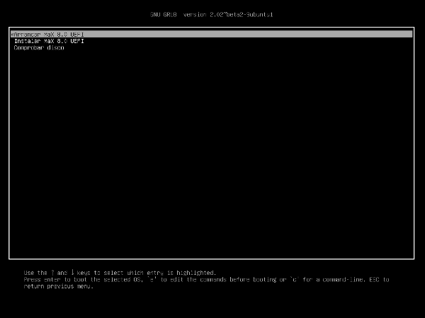

Equipos con BIOS UEFI. Windows 8 y 10
Nota: Inicio rápido de Windows 8 y 10
Incluso en sistemas con Windows 8 y 10 instalados sin modo UEFI (algo que no es habitual) es necesario desactivar el inicio rápido para que pueda convivir con otros sistemas. Para ello, como se describe más abajo, basta con arrancar Windows 8, ir al panel de control, opciones de energía (buscando botón de encendido, por ejemplo) tras seleccionar "Elegir el comportamiento del botón de encendido" pulsar en "Cambiar la configuración actualmente no disponible" y entonces se permite desactivar la casilla de Inicio Rápido.
Desde hace unos años se comercializan los ordenadores personales con BIOS UEFI, que sustituye a la BIOS PC superando algunas de sus limitaciones. No obstante estos equipos nuevos suelen ser compatibles también con BIOS PC. Los ordenadores que vienen instalados con versiones de Windows 8 y posteriores, vienen en modo UEFI. El primer paso será averiguar si su Windows está instalado en modo UEFI. Para ello debe arrancar Windows, abrir un terminal de administrador ("Ejecutar como" sale al dar botón derecho sobre el icono de "Símbolo del sistema") y teclear el comando bcdedit (y pulsar enter) Saldrán en la ventana negra unas líneas de texto en las que tendrá que localizar una línea con el texto "Windows Boot Loader" o "Cargador de Arranque de Windows" y comprobar su contenido: la expresión winload.efi indica arranque en modo UEFI, mientras que winload.exe indica arranque en modo BIOS PC tradicional.
Solo en el caso de querer realizar una instalación de MAX 9.x conviviendo con un sistema operativo preinstalado en modo UEFI 64 bits, deberá seguir estas instrucciones:
- Existe un pequeño riesgo de que la instalación vaya mal y pierda los datos del equipo, es muy importante tener una copia de seguridad y saber si tiene un método de restauración del equipo al estado de fábrica.
- Es necesario entrar en la BIOS del equipo y desactivar la opción "SecureBoot" en los apartados anteriores y en el manual de su equipo están las instrucciones sobre cómo entrar en BIOS. En el caso de Windows 8 y posteriores, una opción es mantener pulsada la tecla mayúsculas (shift) a la vez que se pulsa en la opción Reiniciar (opciones, apagado) y entonces se llegará a una pantalla azul con varias opciones, eligiendo Solucionar Problemas, luego Opciones Avanzadas y por último Configuración de firmware UEFI, reiniciará entrando en BIOS directamente.
- Nota: en algunos equipos no deja modificar esas opciones de BIOS hasta que no se establece una contraseña de supervisor para aumentar la seguridad en el acceso a la configuración de la BIOS.
- Arrancar en Windows y realizar las siguientes acciones:
- Desactivar el inicio rápido: para ello ir al panel de control, opciones de energía (buscando botón de encendido, por ejemplo) tras seleccionar "Elegir el comportamiento del botón de encendido" pulsar en "Cambiar la configuración actualmente no disponible" y entonces se permite desactivar la casilla de Inicio Rápido.
- Abrir el administrador de discos (buscar por particiones, o con botón derecho encima de Equipo y opción "Administrar") y redimensionar la partición con más espacio para crear un hueco de al menos 20 GB para MAX 9. Al pulsar con el botón derecho sobre la partición y redimensionar, seleccionar el espacio a reducir.
- Reiniciar el equipo para arrancar con el DVD o pendrive de MAX 9 64 bits (MAX 9 32 bits no es compatible con UEFI) El arranque desde DVD o pendrive se puede controlar desde la BIOS o con la tecla de menú de arranque (Boot menu) descrito en apartados anteriores.
- Asegurar que MAX arranca en modo UEFI, el primer menú de selección aparece con el fondo de pantalla en negro en vez de azul, ninguna imagen de fondo y con las opciones de "Arrancar MAX 9.x UEFI" e "Instalar MAX 9.x UEFI". Si no fuera el caso, mirar si en el menú de arranque aparece el dispositivo (DVD o USB) dos veces, una en modo uefi y otra no, o en BIOS desactivar totalmente el modo BIOS PC (opción Legacy o CSM desactivada).
 - A partir de aquí se lanzará el instalador de MAX, cuyo funcionamiento se describe en la siguiente sección, y cuando propone varias opciones de instalación, seleccionar "Más opciones".
- Se debe seleccionar el hueco generado con la reducción de particiones y dar al botón + para especificar que cree una partición primaria en todo ese espacio, de tipo "sistema de ficheros ext4 transaccional" con punto de montaje "/" y formatearla. Opcionalmente puede no consumir todo el hueco y dejar espacio para crear una partición de intercambio (swap) con el mismo tamaño que la memoria RAM del equipo. No obstante en los equipos actuales con 4GB de RAM y más, no es necesario salvo para utilizar la opción de hibernación del equipo.
- Al dar a "Instalar ahora" dará un aviso si no ha seleccionado partición de intercambio, que puede ignorar.
- Al terminar la instalación y reiniciar el equipo debería aparecer el menú de arranque de MAX con la primera opción para arrancar MAX 9 y la última para arrancar Windows. Si no fuera el caso consulte a continuación la resolución de problemas o los mensajes en los foros de MAX a este respecto.
Resolución de problemas
La tecnología UEFI, aunque estandarizada, no está implementada igual por todos los fabricantes, encontrando a menudo BIOS defectuosas que generan problemas en arranques duales. Los siguientes consejos ayudarán a recuperar el sistema ante esos problemas:
Tras instalar MAX en modo UEFI no aparece el menú de arranque de MAX y solo arranca en windows
Puede ser debido a que se necesita entrar en BIOS y ordenar la prioridad de las distintas entradas UEFI que haya creadas en el sistema, debería encontrarse una entrada MAX(grub) y poniéndola en primer lugar solucionarse el problema. Si no fuera el caso puede volver a arrancar en modo live (uefi) y tras abrir una terminal ejecutar los siguientes comandos:
sudo apt-get install efibootmgr
sudo check-efi-install
si no tuviera internet se puede sustituir el primer comando por este otro:
sudo dpkg -i /cdrom/pool/main/e/efibootmgr/efibootmgr_0.5.4-7ubuntu1.1_amd64.deb
Tras instalar MAX en modo UEFI el equipo no arranca quedándose en una pantalla negra con el texto "grub>"
Podrá arrancar el equipo con el comando configfile seguido de la ruta del fichero de configuración, que se puede conseguir haciendo ls o autocompletando con tabulador, mientras se escribe, es del tipo:
configfile (hd0,gpt4)/boot/grub/grub.cfg
siendo la parte variable en hd0 (primer disco) y gpt4 (cuarta partición) se puede ir viendo el contenido de cada partición con:
ls (hd0,gpt1)
una vez arrancado el equipo verificar con el comando efibootmgr si el orden de las entradas es el correcto, y si no cambiarlo con el comando efibootmgr seguido por -o y la lista de entradas, ejemplo:
sudo efibootmgr -o 3,1,0
y probar también los siguiente comandos:
sudo grub-install
sudo check-efi-install
Si no se resuelve con los métodos anteriores
Una opción es arrancar con el método anterior u otros y modificar los archivos de /boot/efi/EFI/ (por ejemplo, copiar los de MAX a Boot, tras hacer copia de Boot). Otras opciones son:
Programa boot-repair
Arrancar en modo live con conexión a internet e instalar y ejectuar el programa boot-repair con las siguientes instrucciones desde un terminal (línea de comandos):
sudo apt-add-repository ppa:yannubuntu/boot-repair
sudo apt-get update
sudo apt-get install boot-repair
sudo boot-repair
Una vez en el programa seguir estas instrucciones:
- Ir a opciones avanzadas y poner estas opciones en sus pestañas:
- Opciones principales: reinstalar grub, usar el archivo efi estándar y mostrar el menú de arranque 10 segundos.
- Ubicaciones de Grub: se deja sin modificar.
- Opciones de Grub: sólo marcada Purgar Grub antes de reinstalarlo.
- Otras opciones: todo marcado.
- Al darle a Salir pregunta si hacer copia de la configuración de Windows se debe seleccionar NO.
En el foro de instalación de MAX se encuentra más información para contrastar experiencias con la de otros usuarios y solicitar soporte.
Nota: GPT vs. MBR
En sistemas UEFI los discos se particionan con el sistema GPT (en lugar de MBR) que permite más particiones y mayor flexibilidad para su manejo. El instalador de MAX crea automáticamente particiones en modo GPT cuando se arranca en modo UEFI.
El estándard MBR solo soporta 4 particiones entre primarias y extendidas, como se describe en otros apartados, y no es apropiado para sistemas UEFI. No hay que preocuparse por esto ya que el instalador de MAX lo detecta y configura de forma adecuada.